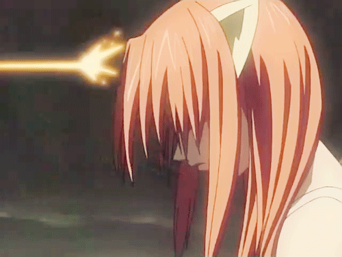
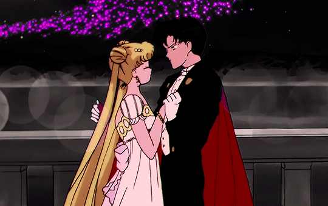

Darling in the Franxx
 En un futuro distante, la humanidad ha creado ciudades
fortificadas llamadas Plantaciones, que funcionan como refugio
para las personas, pues el suelo de la Tierra está arruinado.
Dentro de estas ciudades futuristas, niños y niñas son entrenados
para pilotar robots gigantes llamados Franxx, sin saber nada del
mundo exterior.
En un futuro distante, la humanidad ha creado ciudades
fortificadas llamadas Plantaciones, que funcionan como refugio
para las personas, pues el suelo de la Tierra está arruinado.
Dentro de estas ciudades futuristas, niños y niñas son entrenados
para pilotar robots gigantes llamados Franxx, sin saber nada del
mundo exterior.
Demon Slayer
 En la Era Taisho, Tanjiro Kamado es un chico inteligente y con buen olfato cuya misión consiste en proteger a su hermana demonio para que los cazadores de demonios no la maten.
En la Era Taisho, Tanjiro Kamado es un chico inteligente y con buen olfato cuya misión consiste en proteger a su hermana demonio para que los cazadores de demonios no la maten.
Además, también busca al líder de los demonios, que fue el responsable de la muerte de su familia. En el camino, va conociendo otras personas mientras prosigue la búsqueda de una cura para su hermana.
Parasite
 Un adolescente de 17 años llamado Shinichi Izumi, que vive con sus padres en un barrio tranquilo en Tokio.
Un adolescente de 17 años llamado Shinichi Izumi, que vive con sus padres en un barrio tranquilo en Tokio.
Una noche, criaturas similares a gusanos llamados “parásitos” aparecen en la Tierra, haciéndo huésped a los humanos al invadir sus cerebros entrando a través de los oídos, la nariz, etc.
One Punch-Man
 La historia tiene lugar en una metrópolis ficticia conocida como Ciudad Z, en Japón.
La historia tiene lugar en una metrópolis ficticia conocida como Ciudad Z, en Japón.
El mundo se ve invadido por extraños monstruos que aparecen misteriosamente y que causan numerosos desastres a la población.
Saitama es un poderoso superhéroe calvo que derrota fácilmente a los monstruos u otros villanos con un único golpe de su puño. Debido a esto, Saitama ha encontrado aburrida su fuerza y siempre está tratando de encontrar rivales más poderosos que le puedan igualar.
Elfen Lied

Lucy es una diclonius (humanoide mutante con poderes especiales y dos pequeños cuernos en la cabeza) que escapa del laboratorio donde la tienen encerrada.
En su huida, es herida en la cabeza por la bala de un francotirador, cayendo al mar. Al poco es encontrada en una playa por Kohta y su prima Yuka, que la acogerán en su casa sin conocer su verdadera personalidad.
En su huida, es herida en la cabeza por la bala de un francotirador, cayendo al mar. Al poco es encontrada en una playa por Kohta y su prima Yuka, que la acogerán en su casa sin conocer su verdadera personalidad.
Sailor Moon

Usagi Tsukino es una adolescente japonesa ordinaria, perezosa, algo torpe y llorona cuya vida cambia para siempre cuando ayuda y se encuentra una gata negra con una marca de Luna creciente en la frente, de nombre "Luna", quien le revela que está destinada a convertirse en una Sailor Senshi con poderes mágicos que debe enfrentarse a las fuerzas del mal.
Con ayuda de un amuleto mágico, Usagi es capaz de transformarse en "Sailor Moon", una hermosa y generosa guerrera que defiende a los indefensos en el nombre de la luna.
Con ayuda de un amuleto mágico, Usagi es capaz de transformarse en "Sailor Moon", una hermosa y generosa guerrera que defiende a los indefensos en el nombre de la luna.